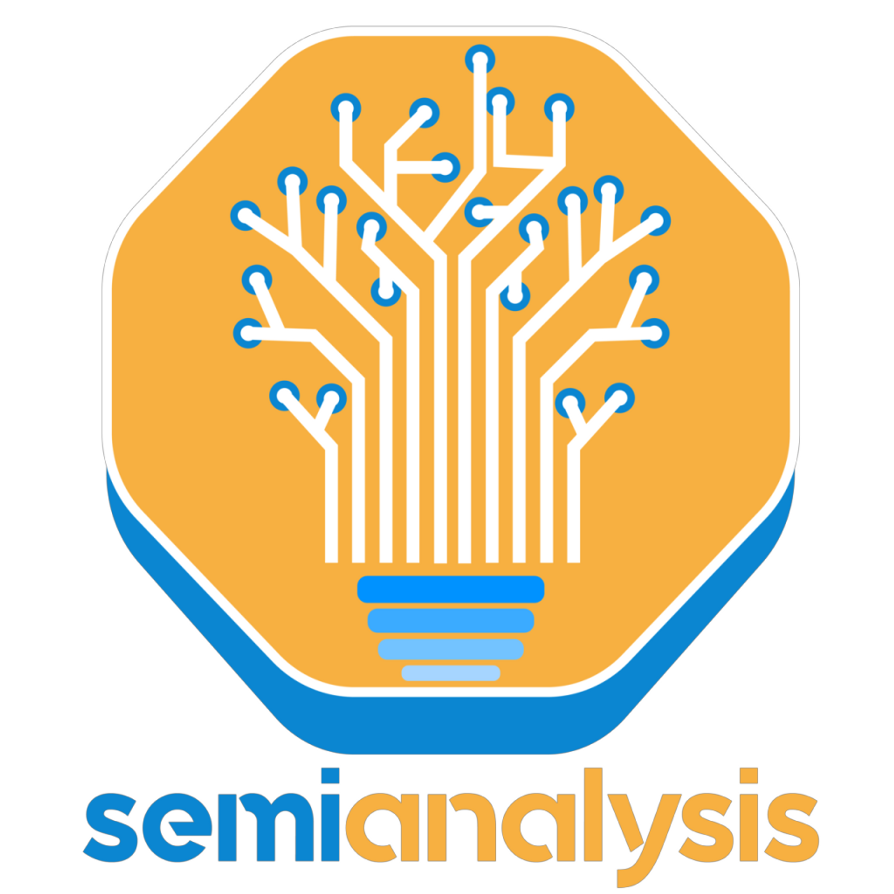
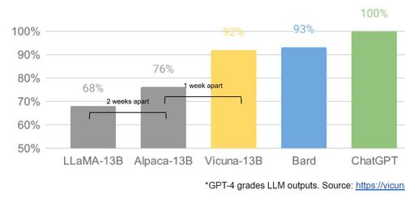
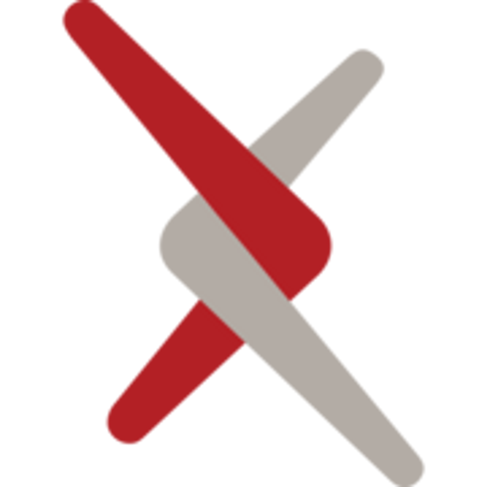
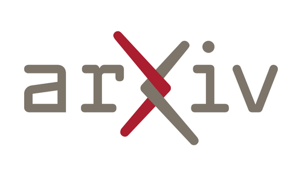
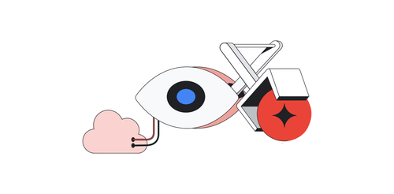

🌱
Daniel Ko
/
📄
Article Recs
Comment
Search
Try Notion
📄
Article Recs
Learn the basic of neural networks
A Neural Network in 11 lines of Python (Part 1) - i am trask
A machine learning craftsmanship blog.
https://iamtrask.github.io/2015/07/12/basic-python-network/
Is open source the future of AI ?
Google "We Have No Moat, And Neither Does OpenAI"
Leaked Internal Google Document Claims Open Source AI Will Outcompete Google and OpenAI

https://www.semianalysis.com/p/google-we-have-no-moat-and-neither

Interactive environments could be coming
Generative Agents: Interactive Simulacra of Human Behavior
Believable proxies of human behavior can empower interactive applications ranging from immersive environments to rehearsal spaces for interpersonal communication to prototyping tools. In this...

https://arxiv.org/abs/2304.03442

Taking a look at TPUs
more on systolic arrays
Should we all embrace systolic array?
On scalability of the matrix multiply unit in Google’s TPU
https://cplu.medium.com/should-we-all-embrace-systolic-array-df3830f193dc
www.eecs.harvard.edu
http://www.eecs.harvard.edu/~htk/publication/1982-kung-why-systolic-architecture.pdf
An in-depth look at Google’s first Tensor Processing Unit (TPU) | Google Cloud Blog
https://cloud.google.com/blog/products/ai-machine-learning/an-in-depth-look-at-googles-first-tensor-processing-unit-tpu

Understanding ReLU (medium member-only story
😢
)
If Rectified Linear Units Are Linear, How Do They Add Nonlinearity?
The Intuition Behind the Neural Network’s Favorite Function
https://towardsdatascience.com/if-rectified-linear-units-are-linear-how-do-they-add-nonlinearity-40247d3e4792